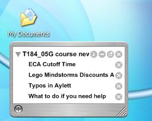

Picking up on an earlier post about making RSS feeds easy to consume, here is a Konfabulator MultiNewsReader Widget (with a default T184 News feed).
The widget is 99.9% the MultiNewsReader widget by Gair Heaton, with the smallest of mods to replace the default news feed.
To try it out, you'll need to install Konfabulator, followed by the widget. Once installed, it should look something like this...

How easy is that? No need to set up a news reader, or login to Bloglines (or whatever your preferred online RSS aggregator happens to be). Just a net connection and a bit of space on your desktop for the widget.
It's easy enough to add other relevant (or even Relevant Knowledge...) feeds to the reader, such as a search of news stories on robot* from the new Google news RSS feeds...
If you prefer, you can limit the search options to just retrieve news stories from your preferrred news agency, such as the BBC. Just make use of the source: switch, as in this search for BBC news stories (source:bbc_news) about computer-virus OR firewall OR spam OR phishing, which may be of interest to T187 students (course taster here), for example...
Posted by ajh59 at August 10, 2005 09:05 PM